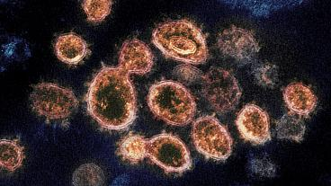

COVID-19: el coronavirus se transmite por el aire, insiste un grupo de científicos
Aa Aa
'Existe una necesidad urgente de armonizar los debates sobre los modos de transmisión de los virus en todas las disciplinas para garantizar las estrategias de control más eficaces y proporcionar una orientación clara y coherente al público' dice la carta abierta de varios científicos desesperados con las idas y venidas sobre la transmisión del nuevo coronavirus.
Además, el mismo día, el Centro de Control de Enfermedades estadounidense CDC ha modificado su página web para reconocer el contagio aéreo como uno de los posibles métodos de transmisión.
La polémica sobre si la COVID-19 se transmite por aerosoles continúa con la carta publicada el 5 de octubre en Science, en la que los científicos dicen 'hay una evidencia abrumadora' a favor de que la inhalación del SARS-Cov-2 'representa una vía principal' de transmisión de la enfermedad.
La misiva está firmada por científicos de varias universidades estadounidenses, como las de San Diego, Maryland, Virginia Tech y encabezados por Kimberly Prather, de la Universidad de la Jolla.
Aunque hay acuerdo en que la COVID-19 se transmite a través de gotitas grandes de saliva que expulsamos al toser o estornudar, todavía no hay unanimidad si el contagio se produce también por aerosoles, es decir gotas mucho más pequeñas que pueden viajar más lejos y permanecer más tiempo suspendidas en el aire.
Los virus en aerosol 'pueden permanecer suspendidos en el aire durante muchos segundos u horas, como el humo, y ser inhalados', además están 'altamente concentrados cerca de una persona infectada, por lo que pueden infectar más fácilmente a las personas que están cerca', indican.
Pero, además, los aerosoles que contienen virus infecciosos 'también pueden viajar más de (dos metros) y acumularse en el aire interior mal ventilado, lo que lleva a eventos de superdifusión'.
Por ello, además del uso de mascarillas, la distancia de seguridad y los esfuerzos de higiene, los investigadores instan a los responsables de salud pública a 'articular la importancia de trasladar las actividades al exterior, mejorar el aire interior utilizando la ventilación y la filtración, y mejorar la protección de los trabajadores de alto riesgo'.
Es importante que las personas lleven mascarillas 'en todo momento en los edificios públicos y espacios confinados', no solo cuando no se puede mantener la distancia de seguridad.
'No es sólo una cuestión académica, sino un punto que ayudará a reducir la transmisión si los funcionarios de la salud pública ofrecen una orientación clara y contundente sobre esto', indica Linsegy Marr, otra de las firmantes y de la Universidad Tecnológica de Virginia, citada en un comunicado.
El objetivo de esta carta, señala Prather, 'es dejar claro que el virus del SARS-Cov-2 viaja por el aire y que las personas pueden infectarse por inhalación'.
Por eso, considera que 'es importante reconocer' esta vía de transmisión 'para que los esfuerzos se centren en la limpieza del aire y en proporcionar orientación sobre cómo evitar los ambientes interiores de riesgo'.
Pero, además, los autores proponen buscar un consenso en la polémica sobre las transmisión por aerosoles y señalan la 'necesidad urgente de armonizar los debates sobre los modos de transmisión de los virus en todas las disciplinas, para garantizar estrategias de control más eficaces y proporcionar una orientación clara y coherente al público'.
Así, escriben que hay que la comunidad científica debe aclarar la terminología utilizada en relación con los aerosoles y las gotitas, y emplear un umbral de tamaño más moderno, en lugar del existente basado en los trabajos de la década de 1930.
La propuesta para distinguir entre aerosoles y gotitas es tomar como medida el umbral de tamaño de 100 micrometros en lugar de los tradicionales 5 micrometros.
Este tamaño -consideran- 'separa más eficazmente su comportamiento aerodinámico, la capacidad de ser inhalado y la eficacia de las intervenciones'.
Los responsables de salud pública 'deberían hacer una clara distinción entre las gotas expulsadas al toser o estornudar' y los aerosoles que -aseguran- pueden transportar el virus a distancias 'mucho mayores'.
Los virus en aerosoles de menos de 100 micras -dicen- pueden permanecer en el aire en un espacio confinado durante períodos de tiempo prolongados y acumularse en el aire mal ventilado, lo que conduce a la transmisión.
El Centro para el Control de Enfermedades estadounidense (CDC) también va en este sentido aunque algo más tímidamente.En una actualización de su sitio web que llega con un mes de retraso, informa el Washingtont Post, el organismo público estadounidense reconoce que en ciertas circunstancias, especialmente en lugares cerrados y mal ventilados, el virus puede transmitirse por los aerosoles del aire a más de un metro de distancia y no sólo por las famosas gotitas, aunque evita el término 'aerosoles' y utiliza 'transmisión aérea'.
El CDC aportó un ladrillo al castillo de la confusión sobre este tema el mes pasado cuando publicó una nota que daba por sentada la transmisión por aerosoles como uno de los métodos más comunes de contagio, y utilizando el polémico término.Poco después retiró el texto, que explicaba los modos de contagio del virus, argumentando que era un borrador que se había publicado en su sitio web por error.
La nueva versión sólo apunta a que el contagio aéreo es un posible medio de transmisión 'bajo circunstancias especiales':
Y se considera que las medidas actuales de prevención -en especial la distancia física y una ventilación adecuada- son suficientes para evitar el contagio.
Según varios reportes, la Casa Blanca ha estado intentando influenciar las publicaciones del CDC durante la pandemia.
La última polémica ha estallado cuando la Administración Trump ha rechazado de plano que el centro rastree los contactos del contagio de la Casa Blanca, que ha llevado al presidente al hospital en plena campaña.
Posted On: 2020-10-06T00:00:00

Content Date: 2020-10-06
Download Date: 2021-04-08
Document ID: L0C049FGR